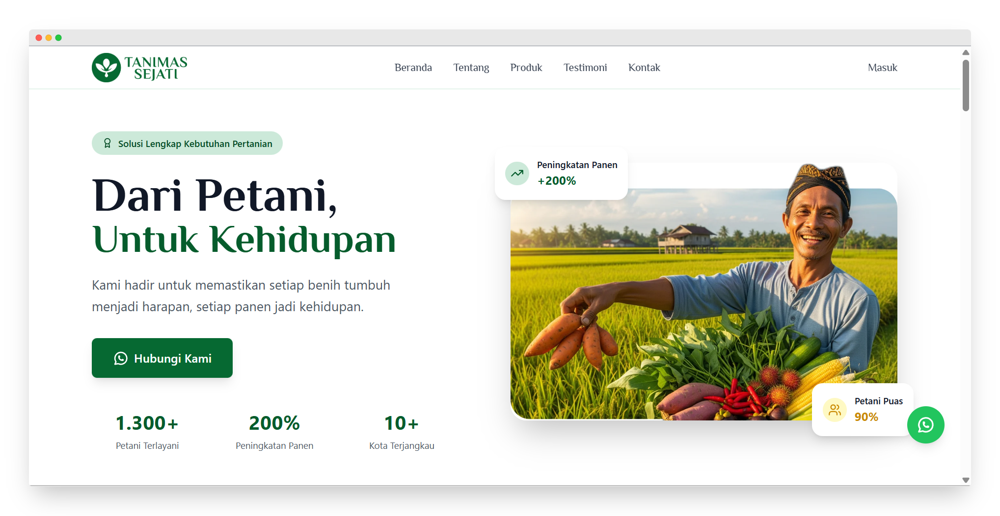

All Project

Aplikasi Haadirin
Haadirin adalah sistem absensi modern yang menggunakan teknologi foto, lokasi, dan verifikasi otomatis untuk memastikan kehadiran pengguna benar-benar valid. Hadirin adalah aplikasi absensi modern yang membantu HR dan Manajemen mencatat kehadiran secara akurat, menghitung gaji lebih cepat, dan menyampaikan informasi penting dengan tepat. Dalam project ini, saya berkontribusi dalam pembuatan panduan penggunaan lengkap dengan gambar agar pengguna dapat memahami fitur-fitur yang tersedia dengan mudah.

Website Tanimas
Notiffin adalah sistem notifikasi otomatis berbasis WhatsApp untuk mengirim pesan dalam jumlah banyak secara real-time. Aplikasi ini memanfaatkan WhatsApp Gateway API sehingga pesan dapat dikirim dengan cepat, akurat, dan tanpa perlu dilakukan secara manual. Dalam project ini, saya berkontribusi dalam menyusun panduan penggunaan yang menjelaskan cara menjalankan fitur-fitur Notiffin mulai dari pengaturan awal, pengelolaan pesan, hingga proses pengiriman notifikasi otomatis. Panduan ini dibuat dengan bahasa yang mudah dipahami dan dilengkapi gambar, sehingga pengguna dapat memahami cara kerja Notiffin tanpa kesulitan.

Aplikasi Vet Klinik
Vet Klinik adalah aplikasi yang dirancang untuk membantu dokter hewan dan staf klinik dalam mengelola layanan secara efisien. Dalam project ini, saya berkontribusi pada desain fitur website Vet Klinik yang fokus pada tampilan dan pengalaman pengguna untuk tiap level akses, yaitu admin, kasir, dan dokter. Setiap level memiliki fitur yang berbeda sesuai kebutuhan pengguna. Saya merancang layout yang jelas, dan menarik sehingga setiap pengguna dapat menjalankan tugasnya dengan mudah dan efisien. Desain dibuat konsisten, dan mendukung alur kerja klinik agar proses manajemen, transaksi, dan pelayanan pasien hewan berjalan lancar.